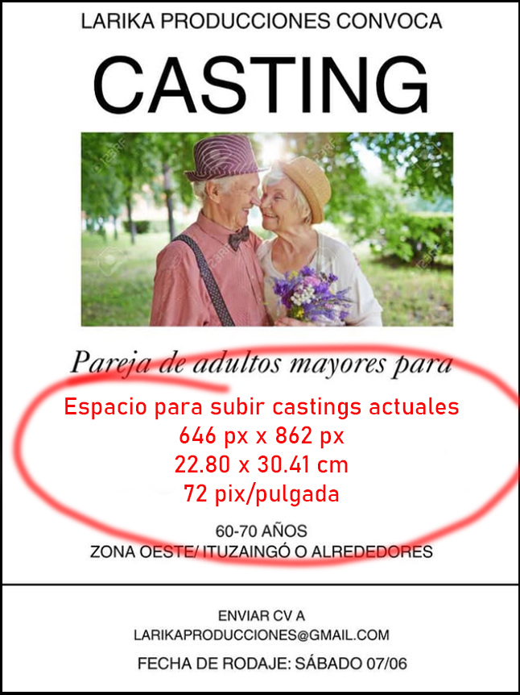

Castings
Estamos buscando...

Estamos buscando...

Soy fotógrafa desde hace 20 años, aunque mi historia con la fotografía comenzó casi por casualidad. Todo empezó con un curso que tomé por hobby, sin imaginar que me abriría las puertas a un nuevo camino profesional. Me enamoré del poder de la imagen y de todo lo que podía expresar a través de ella. Desde entonces, nunca dejé de formarme. Seguí estudiando y explorando diferentes ramas de la fotografía. Me enfoqué principalmente en lifestyle, corporativa, moda, gastronomía, productos y arquitectura. Durante varios años también me dediqué a retratar familias, recién nacidos, bebés y niños, una etapa que me regaló experiencias que enriquecieron mi manera de contar con imágenes. Hoy me dedico full time a crear contenido visual para Getty Images, donde tengo el privilegio de ser colaboradora exclusiva desde hace 18 años. Allí comparto parte de mi portfolio y realizo producciones a medida, buscando siempre responder con sensibilidad y creatividad a lo que cada cliente necesita. Gracias por tomarte el tiempo de leer este breve resumen de mi historia profesional. Ojalá, a través de mis imágenes, pueda transmitirte todo lo que la fotografía significa para mí.
Paz Ruiz Luque
¿Alguna vez pensaste en ser parte de una producción fotográfica? ¿Te animás a vivir una experiencia diferente? Buscamos personas reales, auténticas, diversas para participar en producciones para Getty Images. No se requiere experiencia previa ni cumplir con un perfil específico; solo es necesario tener ganas de divertirse y disfrutar la experiencia. Pueden ser fotos individuales o familiares, con amigos y ¡hasta con tu mascota! El material seleccionado te será entregado en alta calidad en formato digital, en un link que podrás descargar y compartir con quien quieras. Muchas personas ya vivieron esta experiencia y sus fotos forman parte de mi portfolio Si tenés un emprendimiento, negocio, consultorio o una locación interesante, y necesitás contenido visual para tus redes, también podemos generar imágenes juntos mediante un intercambio: vos ofrecés el espacio y yo te entrego fotos profesionales que podrás usar libremente en tus redes o proyectos. Sumarte a la base de datos es muy fácil: solo tenés que completar el formulario con tus datos y algunas fotos. Me encantaría contar con vos en una próxima producción. ¡Gracias por acompañar esta mirada más inclusiva y real del mundo!
Un banco de imágenes es como una gran galería digital donde se almacenan fotografías, videos e ilustraciones, disponibles para que diseñadores, marcas o medios de comunicación los utilice en proyectos publicitarios, editoriales o creativos. Getty Images es una plataforma internacional que impulsa una visión del mundo más inclusiva y representativa. Durante años, muchas personas no se vieron reflejadas en la publicidad. Por suerte, eso está cambiando: hoy son los propios clientes quienes buscan imágenes que representen la verdadera diversidad de nuestra sociedad. Por eso, buscamos incluir personas con distintos tipos de cuerpos, tonos de piel, edades, géneros, orientaciones sexuales, orígenes étnicos y discapacidades, para reflejar con autenticidad esa diversidad. Nuestras producciones se caracterizan por ser cortas, naturales, de situaciones cotidianas, frescas y creíbles. La credibilidad y confianza de Getty Images se basa en la autenticidad de su contenido. Por eso, no acepta imágenes creadas con inteligencia artificial.
Otros trabajos realizados para GettyImages/iStock.